Read Chapter 9 to help you complete the questions in this exercise.
Before the session. This exercise assumes Git is installed, you have a GitHub account, and RStudio can authenticate with it. That takes about half an hour and is fiddly the first time, so please work through the Setting up Git and GitHub page before you arrive. If you hit a real problem, bring it to the start of the session and we’ll help you, but we can’t get everybody set up and still teach anything, so please try first.
Up to now your safety net has been saving your script and hoping for
the best. Version control gives you something a good deal better. It
keeps a record of every version of your work, along with who changed
what, when, and why. If you’ve ever ended up with a folder containing
analysis_final_v2_REALLY_final.R, this is the thing that
saves you from it.
Git is the program that keeps that history on your computer. GitHub is a website that keeps a copy, which makes it a backup, a way to share work, and somewhere to point people who ask what you’ve been doing.
We’ll only cover the everyday loop in this exercise, which is what you’ll use ninety-nine times out of a hundred. You’ll get Git working on your own computer first, in Q1 to Q7, and only then bring GitHub into it. Keeping those two apart in your head from the start makes the whole thing a good deal easier to reason about when something goes wrong.
1. Start by checking your setup is healthy. In the R console run the situation report:
This prints a lot at once, which is normal. You’re looking for just two things. Your name and email address near the top, under the Git global heading, and a line further down confirming that a personal access token was found. There’s a picture of both at Step 7 of the setup page. Everything else you can ignore for now.
If either of those is missing, go back to the setup page and work out which step didn’t take. Ask for help now rather than at Q4, when the symptom will be an error message rather than a missing line.
2. Now create somewhere for your work to live. We’re going to make the repository on GitHub first and then bring it down to your computer, because that way the two ends are connected from the start and there’s less to go wrong.
Go to github.com and log in. Click the + in the top right and choose New repository. If you can’t see it, your Repositories tab has a green New button that does the same thing.
Name it pu5058-practical. Leave the visibility as
Public. Switch Add README on. Then, in
the Add .gitignore dropdown just below it, choose the
R template. That last one is easy to miss and it saves
you a job later, so check your form looks like this before you click
Create repository.
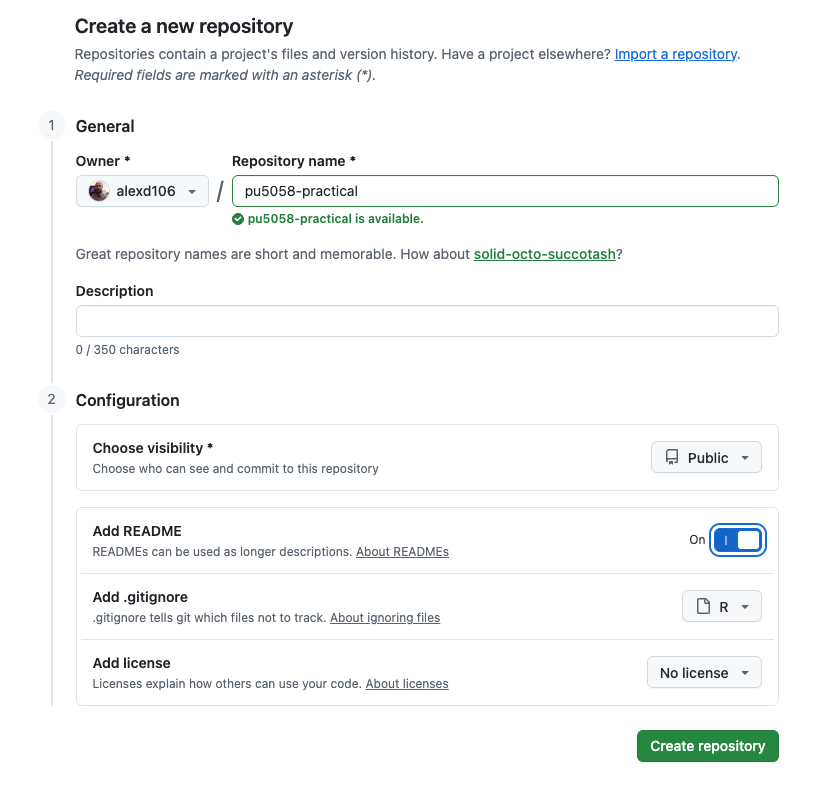
On the page that appears, click the green Code
button, make sure HTTPS is selected rather than SSH,
and copy the web address. It will end in .git.
In RStudio, go to File ->
New Project.... The window that opens gives you three ways
to make a Project, and you want the third one.
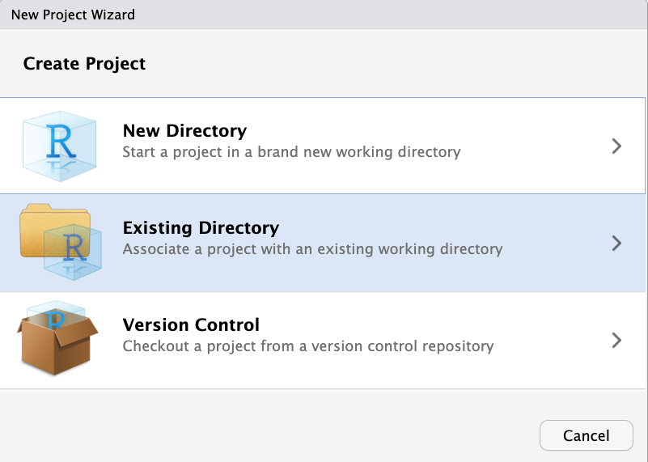
Choose Version Control, then Git. Paste the address into the ‘Repository URL’ box. The ‘Project directory name’ box fills in on its own. Under ‘Create project as a subdirectory of’, browse to wherever you keep your work for this course, then click Create Project.
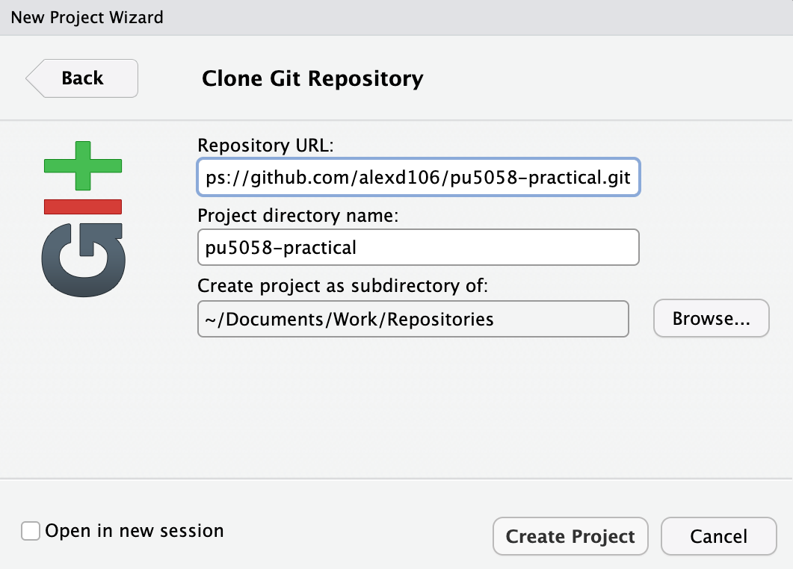
If there’s no Version Control option in that first window, RStudio hasn’t found Git on your computer. That’s Step 3 of the setup page, and the situation report in Q1 doesn’t check it, so this is where you find out.
RStudio restarts and opens a new Project containing the README and
the .gitignore that GitHub made for you. You now have the
same repository in two places, one on your computer and one on GitHub.
Keeping those two in step is what the rest of this exercise is
about.
Note this is a different Project from the one you’ve used for Exercises 1 to 7. That’s deliberate, so you’re not putting the whole course under version control today.
3. Before you touch anything, get your bearings. Find the Git tab in RStudio, which unless you’ve moved your panes around will be in the top right one alongside Environment and History. It only appears in a Project that’s under version control, which is why Q2 came first.
There isn’t much in it yet. You should see a single file,
pu5058-practical.Rproj, which is the Project file RStudio
made for you a moment ago. Everything else that came down from GitHub is
already being looked after by Git, so there’s nothing to report about
it.
Find each of these, without clicking yet:
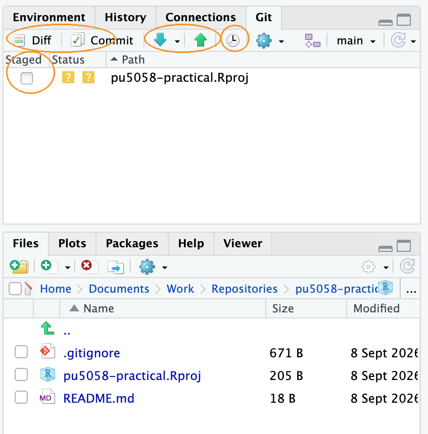
The coloured icon beside a file tells you what Git currently makes of
it. A yellow ? means Git can see the file but isn’t keeping
track of it, which is the case for pu5058-practical.Rproj
right now. You’ll meet a blue M for a file that’s been
modified and a green A for one you’ve staged as you work
through the next few questions. Here is the full set:
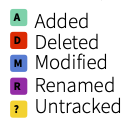
4. Time to make your first commit, slowly. First you’ll need something worth saving, and rather than invent something you’ll use the report you built in Exercise 7.
cardiac_report.Rmd itselfdata folder containing
cardiacdata.txtoutput folder containing
ex6_admissions.pngThe paths written inside the report are relative to the
.Rmd file, so those two folders have to keep their names
and sit right next to it. You’re copying rather than moving because this
is a different Project from the one you’ve been working in. If you
haven’t got a working report of your own, download the finished one from
the Exercise 7
solutions.
Open cardiac_report.Rmd in RStudio and knit it. Do
this before you go anywhere near Git, so that you know it works in its
new home. Knitting also produces cardiac_report.pdf, which
you’ll come back to in Q7.
Now look at the Git pane. Several things have appeared, all with
a yellow ?, because Git can see them but isn’t keeping
track of any of them yet. Tick the Staged box next to
cardiac_report.Rmd and that one only. Its icon changes to a
green A, for ‘added’. Leaving the others alone is the point
here: you choose what goes into a commit rather than sweeping up
everything that happens to be lying around.
Click Commit. A window opens showing the file you staged and, underneath, every line you’re about to record. Type a message in the box on the right. Make it say why you made the change rather than just what you changed. ‘add cardiac report from Exercise 7’ is a useful message, ‘update’ is not, and in six months you’ll be grateful. Click the Commit button, read the confirmation, and close it.
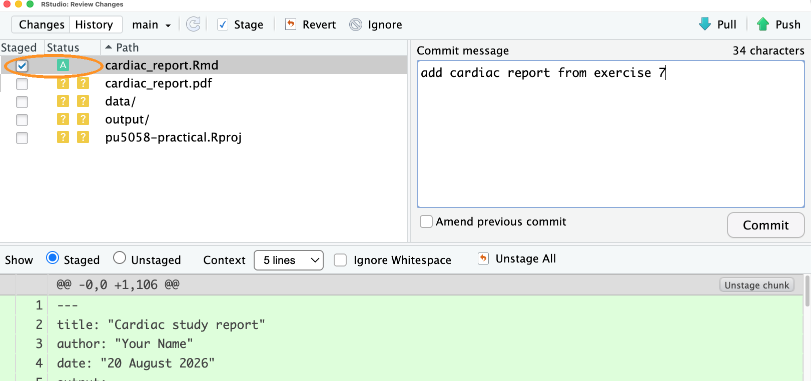
Your report is now recorded in the history, and notice that it all happened on your own computer. Nothing has gone anywhere near GitHub yet, and nothing needs to until Q8.
A line has also appeared at the top of the Git pane saying that your
branch is ahead of ‘origin/main’ by 1 commit. origin/main
is Git’s name for GitHub’s copy of your work, and that line is Git
telling you the two copies have drifted apart. The number will go up
each time you commit, and it goes back to nothing when you push in
Q8.
5. Now do it again, because the loop only becomes useful once it’s
automatic. Open cardiac_report.Rmd, find the sentence in
your data description that begins ‘These data come from a cohort study’,
and reword it to say that the study is unpublished. Save the file. It
reappears in the Git pane, this time with a blue M for
‘modified’.
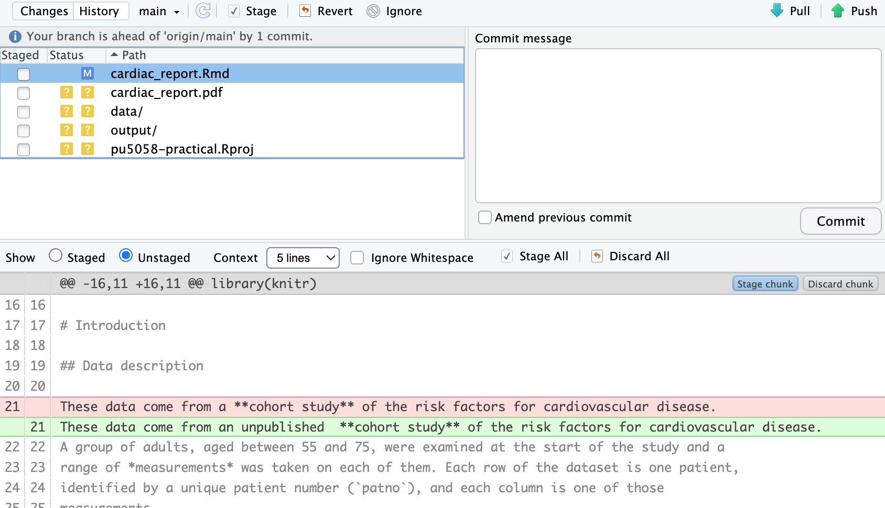
Read what it shows you. Added lines are green, removed lines are red, and the unchanged lines around them are there for context. Notice that Git has recorded your reworded sentence as one line removed and one line added, because Git works a line at a time and has no idea that the two are almost the same. Getting into the habit of looking at the diff before committing catches an enormous number of mistakes.
Notice too that the diff is of your .Rmd file rather
than the PDF. Git is designed for plain text, which is exactly what an R
markdown file is, and it is one of the reasons for writing a report this
way rather than in Word.
Stage it and commit it with a sensible message, again without pushing.
Now click History, the clock icon. You’ll see
your two commits at the top, most recent first, with the
Initial commit that GitHub made for you sitting underneath
them. Click on the top one and the panel below fills in with the details
of just that commit, including the changes it contained and its
SHA, the long string of letters and numbers that is the
commit’s name. You’ll come back to that panel in Q10.
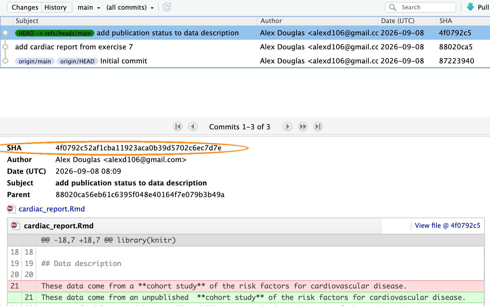
This history is the part that makes version control worth the trouble. The backup is useful, but being able to look back at what you did, and why you did it, is more useful still.
6. Everyone makes changes they wish they hadn’t. Git gives you a way back.
chol-plot chunk that
draws the boxplot, and save it. Do not commit. Now
click on cardiac_report.Rmd in the Git pane to select it,
click the blue gear icon along the top of the pane and choose
Revert…. Say yes to the warning, then look at your
report again and the deleted chunk is back.
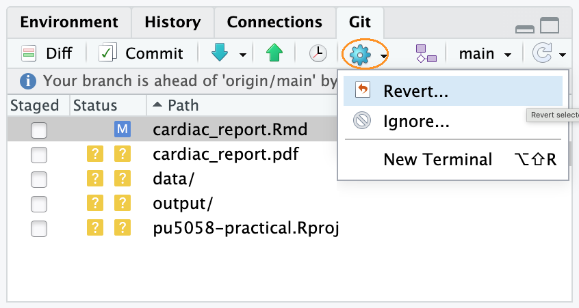
Be careful with this one. It’s not an undo button. It throws away everything you’ve changed since your last commit, not just the last thing you did, and there’s no way back. Commit often and you’ll rarely need it.
In your report, find the ## Results heading and change
it to something more useful, say
## HDL cholesterol and smoking status. Save the file, stage
it, and commit it with the message
change Results heading.
Now realise you meant to do more than that. Underneath that heading,
add a sentence saying what the figure below it shows. Save the file and
stage it again, but this time, before you click Commit,
tick Amend previous commit. Notice that RStudio fills
the message box back in with change Results heading for
you. Commit.
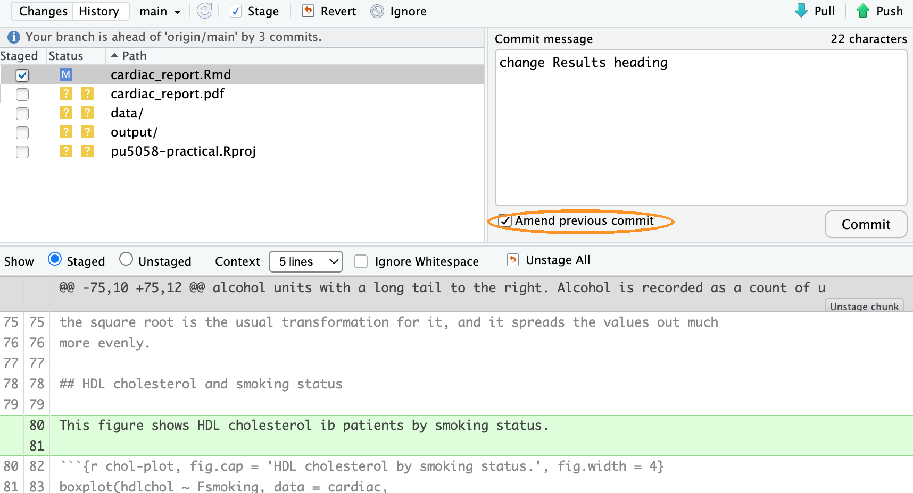
Click History and count. You made two separate changes and clicked Commit twice, but there is only one new commit, holding both of them. That is what amending does: rather than adding a commit, it replaces the previous one.
You are safe doing this here because you haven’t pushed anything yet. Once a commit is on GitHub other people may already have it, and rewriting one at that point causes them problems, so treat Amend previous commit as something you only ever use on work that is still on your own machine.
7. Before you send any of this to GitHub, decide what should be
going. Open the .gitignore file in your Project. This is
the list of things Git deliberately ignores, and GitHub gave you a
sensible starting one when you chose the R template in Q2.
Read through it. You should recognise .Rhistory and
.RData.
Look back at the Git pane. cardiac_report.pdf is
still sitting there with a yellow ? from Q4, and it will
reappear every time you knit. It doesn’t need a history, because anybody
with your .Rmd file and the data can produce it again in
one click. Add a line to .gitignore that ignores it and
watch it disappear from the pane.
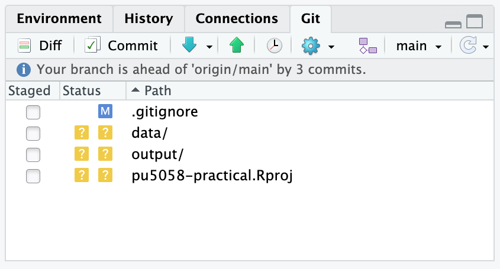
If you’re on a Mac you may also see a file called
.DS_Store in the pane, which Finder writes into every
folder you open and which has nothing to do with your work. Add that to
.gitignore too.
Notice that the gear menu you used in Q6 also has an
Ignore… option, which adds the selected file to
.gitignore for you rather than making you type it.
Now a judgement call, because ‘ignore anything you generated’ is
too blunt a rule. Your output folder holds
ex6_admissions.png, and your report can’t knit without it.
If you ignored that folder, anybody who cloned your repository would get
a report that fails on the last figure. The question to ask is not ‘did
I generate this?’ but ‘could somebody rebuild it from what is already in
the repository?’. The PDF, yes. The png, no, because you made it in a
different Project from data that isn’t here.
Last of all, think about your data. cardiacdata.txt
is small, unchanging and not confidential, so committing it is
reasonable and makes the project self-contained. Real patient data would
be a different matter entirely. Never put confidential data or
passwords in a repository, and be especially careful with
public ones, because deleting a file doesn’t remove it from the
history.
So put that into practice. data/,
output/ and pu5058-practical.Rproj have been
sitting there untracked since Q4, and all three belong in the
repository. The first two because the report needs them, and the third
because it is what makes the folder an RStudio Project for anybody who
clones it.
Stage those three and the .gitignore you just edited,
commit them with a sensible message, and look at the Git pane
afterwards. It should be completely empty. Everything you wanted is now
in the history and everything you didn’t is being ignored, which is
exactly the state you want a project to be in before you send it
anywhere.
8. Stop for a moment before you click anything. Everything
you have done up until now has been local. Every commit you
made in Q4 to Q7 went into a hidden folder inside
pu5058-practical on your own computer, and GitHub has no
idea that any of it happened. Refresh your repository page in the
browser and you’ll still see nothing but the README and the
.gitignore you made back in Q2.
That’s worth noticing, because it’s the difference between the two halves of this exercise. Git gave you the history. GitHub is about to give you the backup, and everything from here on is about keeping the two in step.
Click the green Push arrow, the up arrow in the Git pane. A window opens showing you what Git did.
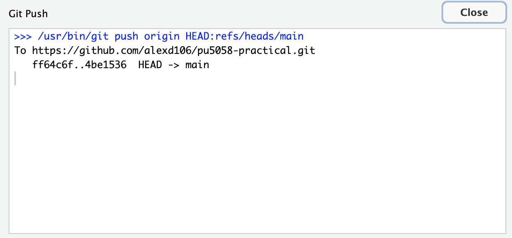
Wait for it to finish, close it, then go to your repository page on GitHub in your browser and refresh.
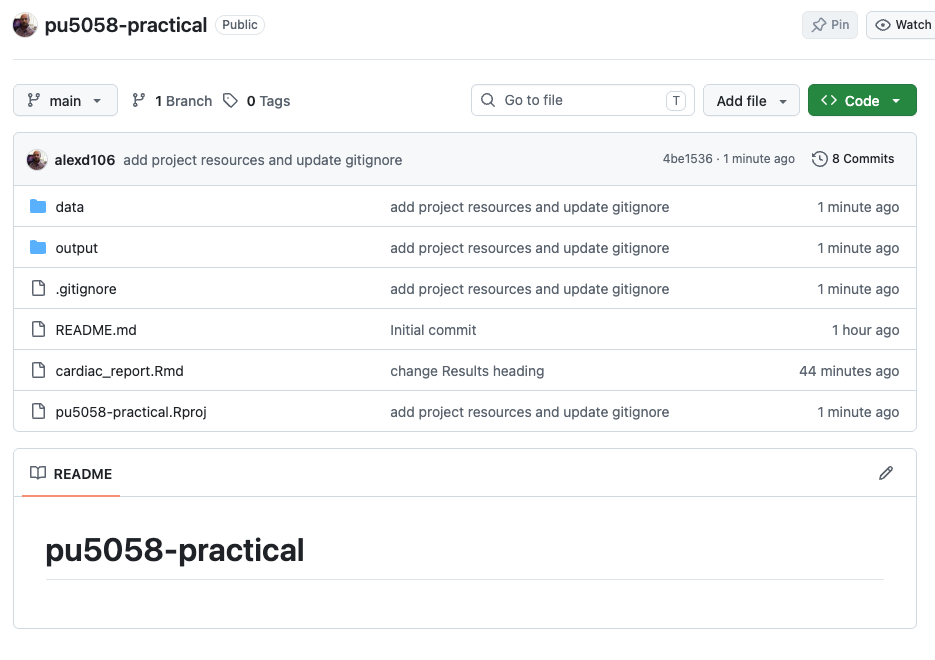
Your report is there, and so are the data, the figure and the
.Rproj file, which means somebody could clone this
repository and knit your report themselves. So is every commit you made
along the way, not just the last one. Push sends everything Git has that
GitHub hasn’t. Click on the commit count near the top of the file list
and you will see them all, with the messages you typed. Back in RStudio,
the line telling you that your branch was ahead of
origin/main has gone, because the two copies now match.
If the push fails with a message about authentication then your token is the problem rather than anything you’ve done here, and see the last section of the setup page. Everything you have committed is safe on your computer either way, which is rather the point of keeping the two separate.
9. Once more round the loop, and this time all the way through to GitHub without stopping. Change, look, stage, commit, push. That sequence is what you’ll be doing every day, so it’s worth doing once from end to end now that you know what each step is for.
Open cardiac_report.Rmd and add a sentence of your
own at the very end, under the last figure, saying what you would look
at next if you had more time. Save the file.
Click Diff and read the change, then stage the file and commit it with a message saying what you added and why.
Before you push, click Pull, the blue down arrow. You’ll get a short message telling you that everything is already up to date, which is exactly what you’d expect. You’re the only person working on this repository, and the only things on GitHub are the things you put there yourself.
It’s still the habit to get into. When you’re working with other people, they’ll have been committing while you were, and pulling their work down before you send yours up is what keeps the two copies in step. If you both change the same lines of the same file and neither of you pulls first, Git can’t tell which version is right and asks you to sort it out. That’s a merge conflict, and sorting one out is a lot more work than the click you skipped. Pull before you push, even when, as today, there’s nothing to pull.
10. Last of all, the question everybody gets to sooner or later. You’ve pushed something, and then realised it shouldn’t have gone.
You’ve already met two ways of undoing things and neither of them will do here. Revert… in the gear menu, from Q6a, throws away changes you haven’t committed yet, and this one is committed. Amend previous commit, from Q6b, rewrites your last commit, which is only safe while it’s still on your own computer, and this one is on GitHub. What you need is something that undoes the change without pretending it never happened.
That something is git revert, which adds a new
commit that is the exact opposite of an old one. The original stays in
the history, the new one cancels it out, and anybody who already has
your work simply gets one more commit. Be careful with the name, because
RStudio’s Revert… button and the
git revert command do quite different jobs and only share a
word. There’s no button for git revert in RStudio, so this
is the one place in this exercise where you type a Git command
yourself.
First, look at the Git pane and make sure it’s empty.
git revert won’t run if you have uncommitted changes lying
around. If you have any, commit them.
Now find the commit you want to undo, which is the one you made in Q9. Click History, the clock icon, and click on that commit. Its full SHA appears in the panel underneath, a long string of letters and numbers that is the commit’s name. You only need the first seven or eight characters, so copy those, or just write them down.
Open the Terminal. It’s the tab next to the Console in the bottom
left pane, and if it isn’t there, use Tools ->
Terminal -> New Terminal, or Shift+Alt+R
(Option+Shift+R on a Mac). The Terminal isn’t the R console. It talks to
your computer directly rather than to R, so R commands won’t work in
it.
Type this, with your own SHA in place of the one below, and press enter:
git revert --no-edit 1b0f779
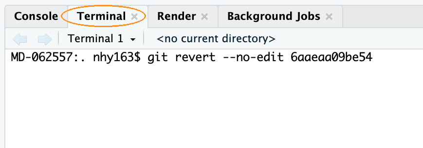
The --no-edit part matters. Without it Git opens a text
editor so that you can write a commit message, and the editor it opens
is one that’s genuinely hard to get out of if you’ve never met it. With
it, Git writes a sensible message for you. Since the commit you’re
undoing is the most recent one, you could also have written
git revert --no-edit HEAD, because HEAD is
Git’s name for wherever you are now.
Look at your report. The sentence you added in Q9 has gone. Look at the Git pane and you’re one commit ahead of GitHub again, although you may have to click the refresh icon, the circular arrow on the right of the pane, before RStudio notices what you did behind its back. Click History and you’ll see both commits, the one that made the change and the one that undid it, so the record of what happened is complete.
Push, and refresh GitHub. The report is back to how it was before Q9, and the history says why.
This is the general answer for anything that’s already public. Once a commit has been pushed, you undo it by adding another commit rather than by taking one away.
Git can do a great deal more than this. Branches let you work on something risky without disturbing the version that works. Forks and pull requests are how people contribute to each other’s projects. Merge conflicts, the ones described in Q9, have a set of tools of their own once they get beyond the straightforward. None of that is needed for this course, and all of it is easier to learn once the everyday loop in this exercise is second nature.
When you want to go further, the standard reference for R users is Happy Git and GitHub for the useR, which is free online. Section 9.6.4 of the Introduction to R book gives an overview of how collaboration works.
One last thing. The website you’re reading this on is built from a public GitHub repository, using exactly the tools in this exercise. The Source code link in the menu at the top of this page will take you to it.
End of Exercise 9